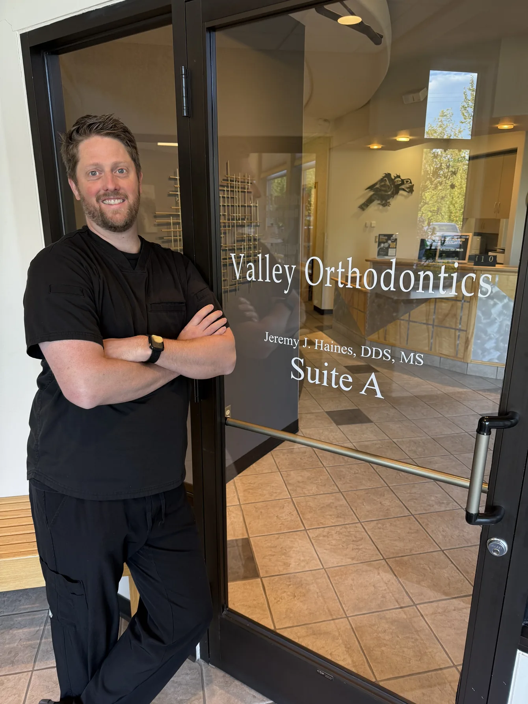

Your goals
Share your goals and ask about braces, Invisalign or care for your child.
Dr. Jeremy Haines is a board-certified orthodontist. Valley Orthodontics is the only practice in Wasilla limited to orthodontics, welcoming patients from Palmer and across the Mat-Su Valley.

Board-certified orthodontist
Dr. Jeremy Haines, treating children, teens and adults in Wasilla.
Orthodontics only
The only practice in Wasilla limited to orthodontics.
Free first consultation
Includes a TMJ analysis. Appointments are arranged by phone.
Alaska grown
Locally owned and independent, serving Wasilla, Palmer and the Mat-Su Valley.
Dr. Jeremy Haines
Board-certified orthodontist
At Valley Orthodontics, Dr. Haines focuses on orthodontic care for children, teens and adults. Your consultation is a chance to talk about the smile you want and explore the options available to you.
Meet Dr. Jeremy HainesExplore the treatment options available at Valley Orthodontics.
Metal and clear braces for children, teens and adults, planned around the result you want. Still the most predictable way to correct a complicated bite.
Learn moreClear aligners you take out to eat and to brush. At your consultation Dr. Haines will tell you honestly whether they suit the result you are after.
Learn moreA first orthodontic check while a child is still growing. Catching a problem early can shorten later treatment, and sometimes avoid it altogether.
Learn moreFor jaw pain, clicking and clenching. Your free consultation includes a TMJ analysis, so this starts with working out what is actually going on.
Learn moreFor bites that braces alone cannot correct, planned together with an oral surgeon. Ask whether your case needs it at your free consultation.
Learn moreKeeping your result after treatment ends. Ask about the program at your consultation, along with touch-up treatments if teeth have moved since.
Learn more
Our office serves children, teens and adults from Wasilla and Palmer. We use iTero digital scanning and offer massage chairs at the practice.
Visiting from PalmerShare your goals and ask about braces, Invisalign or care for your child.
Discuss your recommended treatment, expected timing and the steps ahead.
Review costs, financing and insurance before deciding how to move forward.
Yes. Valley Orthodontics offers a free consultation. Call (907) 376-1510 to arrange your visit.
Yes. Dr. Haines provides orthodontic care for adults as well as children and teens. Ask about your options at your consultation.
Yes. We welcome patients from Palmer and the Mat-Su Valley at our Wasilla office.
Call our team to find an appointment time. Consultations are scheduled by phone.
Call our Wasilla team to arrange an appointment for yourself or your child.
Call (907) 376-1510Call our team to arrange your visit.